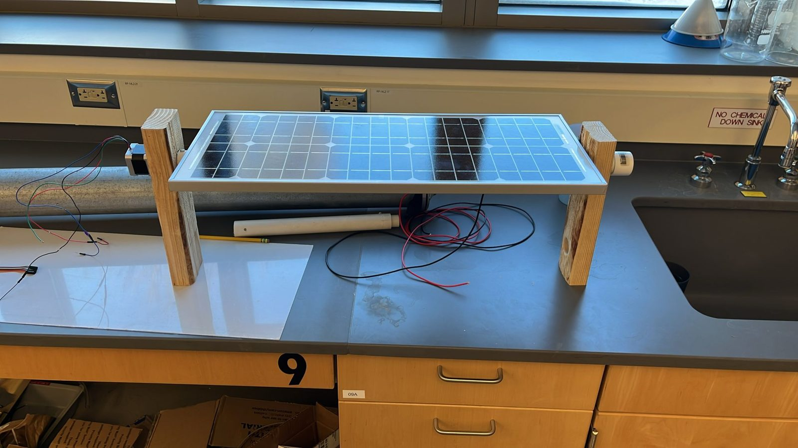

Case study · Solar energy
Is solar tracking worth it?
I started with a student solar tracker that wouldn't stop twitching. Rebuilding it in simulation led to a bigger question: when does tracking the sun actually pay for itself?
Every number is cited: numbered marks point to published sources, R to a result file in my repository, A to a labeled assumption, and P to my own account. See all sources.
- Role
- Control logic on a team of fiveP; this rebuild is solo
- Tools
- Python, pvlib, Arduino C++, Wokwi, C
The short answer
Not on a home. On a solar farm it's close, and its energy arrives when power is worth more
A single axis tracker in Phoenix makes 25% more energy than fixed panels,R but on a home it costs far more than that energy is worth. On a farm, where trackers stand in rows, the gain drops to 19% and the extra energy is worth about what the tracker costs.R40 The extra energy also arrives in the morning and late afternoon, when power is worth more: priced hour by hour with 2025 California data, tracker rows earn 34% more than fixed panels from 19% more energy.R
1 · Where it started
A tracker that worked under a lamp and twitched outside
In my second year at St. Olaf, our team built a solar tracker. The first prototypes were dual axis: four photoresistors, two servos, and an Arduino. The logic was simple. Compare the light on each side, and if the difference beats a threshold, step the servo toward the brighter side.P

Indoors the servo prototypes were smooth. Outdoors they jittered back and forth and barely followed the sun. Logging the sensor readings showed why: clouds and reflections made the readings jump by more than the threshold we had tuned under a steady lamp, so the controller kept reacting to noise. We fixed it by averaging the last 20 readings and widening the threshold into a deadband sized from the noise we measured.P
The field logs from that project were lost.P So I rebuilt the prototype's controller in a hardware-in-the-loop simulation: the real Arduino code runs on a simulated ATmega328P in Wokwi,25 and a custom simulated part I wrote in C26 plays the outside world.
The panel angle feeds back into how much light each sensor sees, which closes the loop.
The fix, measured
Dual axis tracker over one simulated day with 30% cloud cover and 10% reflection flicker (modeledA)
| Controller | Servo moves | Direction reversals | Avg. pointing error |
|---|
2 · How much energy
Modeling a year of sunlight, hour by hour
To ask whether tracking is worth it, I first needed to know how much energy it adds. I built an energy model in pvlib8 for a 4.8 kW home-sized system: twelve 400 W panels and a 3.85 kW inverter, real parts from the database NREL's tools use.17 For every hour of a typical year,21,22 it works out where the sun is,9 how much light lands on the tilted panel,10 how much bounces off the glass,11,12 how hot the cells get,13 and what the inverter delivers.15
I compared four setups at two sites: Phoenix, where only 23% of the sunlight is diffuse,R and Des Moines, where 41% is.R Diffuse light is scattered across the whole sky, and flat panels already collect it, so a tracker gains most from the direct beam.20
Energy per kW of panels, per year
Percent gain over panels fixed at the best tilt
Energy through the year
AC energy per month, 4.8 kW system
Checking the model. Against seven years of minute-by-minute output from a real NREL test array in Golden, Colorado,38,39 with nothing tuned to fit, the same equations predicted the total energy within 2% from satellite weather alone.R Swapping in NREL's simpler PVWatts equations16 changes every result by less than 1.5%,R and the tracking gains match published ranges: EnergySage puts single axis gains at 25 to 35%.3 Single hours are far less certain, so this study only reports yearly totals.
3 · Is it worth the money
How much could a tracker cost and still pay for itself?
Tracker prices vary a lot, so instead of guessing one I flipped the question: how much extra could a tracker cost, per watt of panels, and still pay for itself over 25 years? That break-even price depends on how much extra energy it makes and what that energy is worth: about $0.15 per kWh to an Arizona home,4 and about $0.03 per kWh for a solar farm selling power under contract.1
For a farm I modeled the trackers in rows that backtrack,7 because that is how they are built. Panels covering 35% of the ground is my assumption.A
Break-even price vs what trackers really add
Extra cost per watt of panels. Each panel has its own scale.
Show the numbers
| Case | Extra kWh per kW | Break-even | Market | Payback or verdict |
|---|
Which tracker price is the right one? Published figures disagree because they measure different things. Berkeley Lab found 2025 tracker projects cost only $0.01/W more than fixed ones, but those are different projects, and the report says the comparison "does not control for other factors" like size, land and labor.1 SEIA and Wood Mackenzie model the same system built both ways: $0.11/W extra for Q2 2026.40 For deciding how to build one farm, that like-for-like price is the fair yardstick, and against it Phoenix farm rows break even in only 3 of 9 combinations of contract price and discount rate.R
Yet 96% of new US utility solar uses single axis trackers.1 When a model disagrees with an industry, the model is probably missing something. Mine values every kWh the same, but trackers shift output toward pricier hours,5 which section 4 tests. Dual axis trackers would add more energy still, but their complex mechanics and heavy structures have kept them rare on farms;34 my model has no cost data for them, so it can't weigh that trade-off.
4 · When the energy arrives
Pricing every hour: a tracker's extra energy is worth more than its share
To test the timing explanation, I priced every hour of output with CAISO's 2025 day-ahead prices for Southern California,41,42 the clearest case of a grid flooded with midday solar.43 To keep weather and prices in the same place, I used typical-year weather for Daggett, a Mojave Desert site in that price zone, instead of Phoenix.21 Power there averaged $32/MWh in 2025, but only $10 to $12 from 9 am to 2 pm and about $50 at 6 pm, and 31% of a fixed panel's energy came in hours when the price was below zero.R
Price and output through the day, 2025
Average by hour (Pacific standard time). Output per kW of panels over the year.
Extra energy vs extra money, compared with fixed panels facing south
| Setup | Extra energy | Extra market revenue | Value per MWh |
|---|
Does timing make farm trackers pay? Partly. Per MWh, tracker rows' output is worth 13% more than fixed panels'.R On a flat $30/MWh contract, the extra energy is still worth about $0.10/W, roughly even with the $0.11/W price.R40 Sold at 2025 market prices it is worth only $0.07/W, because midday solar of every kind earned little: fixed panels averaged $12.45/MWh.R
So timing adds real value and helps explain the industry's choice, but this study can't show it is the whole reason. The bigger story in 2025 California is that midday solar of any kind earned very little, and batteries keep growing to move that energy into the evening.43 The weather is a typical year and the prices are from 2025, so they are matched by date and hour, not by actual cloudy days.A
5 · Back to the controller
Did fixing the twitch earn more energy? Barely. It saved the motors.
Finally, I connected the two halves. I took each controller's pointing error from the simulation and ran it through the energy model for a full Phoenix year. I also added a controller that uses no light sensors at all: it calculates where the sun is from the date and time, which is how commercial trackers are described as pointing.6
Pointing error barely costs energy
Dual axis tracker in Phoenix. Dots mark each controller's average error.
What I took away
Lessons from the rebuild
- Measure the decision, not just the device. My prototype question was "does it follow the sun?" The useful question was "is following the sun worth the cost?", and answering it took weather, cost and price data.
- The convenient number isn't always the right one. A $0.01/W tracker premium made the farm case look easy. Checking what each cost figure measured changed the answer from "clearly pays" to "roughly even".1,40R
- Check models against reality. Matching another model only proves two models agree. Matching a real array within 2% says the physics holds, and a result that contradicts an entire industry says something is missing, here the value of when energy arrives.R
Limits. One typical year per site;22 a flat electricity price except in section 4, which uses one year of prices at one hub;A row shading of the direct beam only, with fixed panels modeled without rows of their own;A no tax credits, bifacial panels or dual axis cost data; and a measured-data check on one fixed-tilt array.38 The controller results use modeled cloud noise.A
Sources
Where every claim comes from
Numbers match SOURCES.md in the repository, which also gives the exact quote each claim relies on. NREL was renamed the National Laboratory of the Rockies in December 2025; documents are cited under the name they were published with.
Costs, prices and industry practice
- 1Lawrence Berkeley National Laboratory, Utility-Scale Solar, 2026 Edition (slides, Oct. 2026). 96% of new 2025 capacity used single-axis tracking; $1.31/W DC tracking vs $1.30/W DC fixed (2025); PPAs typically $25–35/MWh in the West; tracking adds more than 5 points of capacity factor where sunlight is strongest. https://eta-publications.lbl.gov/sites/default/files/2026-10/utility_scale_solar_2026_edition_slides.pdf
- 2NREL, PV system cost benchmark, Q1 2024 (report 92257). Residential price $3.15/W DC; $0.20/W DC tracking premium in Berkeley Lab 2023 data. https://nrel.gov/docs/fy25osti/92257.pdf
- 3EnergySage, "Is a solar tracking system worth it?" Trackers add 40 to 100% to system cost; single axis gains 25 to 35%; dual axis 5 to 10% more; generally not worth it for residential, usually rooftop, systems. https://www.energysage.com/business-solutions/solar-trackers-everything-need-know/
- 4EnergySage, "Cost of electricity in Arizona." Average residential rate 15 cents/kWh, November 2026. https://www.energysage.com/local-data/electricity-cost/az/
- 5J. H. Kim, A. D. Mills, R. Wiser et al., Berkeley Lab, Sept. 2021. Tracking shifts solar output toward higher-priced late-afternoon hours. https://emp.lbl.gov/news/project-developer-options-enhance-value-solar
- 6The Fredericks Company, "AN 1004: Inclinometers for Solar Tracking Systems." Algorithms tell trackers where to point, inclinometers confirm it, and photodiodes may lose usable feedback when clouds cover the sun. https://www.frederickscompany.com/application-notes/inclinometers-for-solar-tracking-systems/
- 7K. Anderson and M. Mikofski, "Slope-Aware Backtracking for Single-Axis Trackers," NREL/TP-5K00-76626, 2020. https://doi.org/10.2172/1660126
- 40SEIA and Wood Mackenzie, US Solar Market Insight Q3 2026, executive summary (Sept. 2026). Utility-scale system prices for Q2 2026 from a "bottoms-up modeling methodology": fixed-tilt $0.95/W DC, single-axis tracking $1.06/W DC. https://tecsol-quotidien.fr/wp-content/uploads/2026/09/USSMI_Q3_2026_ES.pdf
- 41California ISO, OASIS: 2025 day-ahead hourly locational marginal prices at trading hub TH_SP15_GEN-APND. http://oasis.caiso.com; my copy: caiso_sp15_dam_2025.csv
- 42gridstatus, open source Python library used to download the CAISO prices (version 0.37). https://opensource.gridstatus.io
- 43Grid Status, "Batteries Boom but Solar Slides in CAISO," 2026: midday curtailment rose by nearly 2 GW in 2026, midday prices often negative, battery charging and discharging rising. https://blog.gridstatus.io/batteries-boom-but-solar-slides-in-caiso/
- 34S. Chunduri, "Dual-Axis Trackers Remain A Niche In Utility Applications," TaiyangNews, Apr. 2, 2026. Complex mechanical architecture and heavy structural requirements keep them uncommon in utility-scale projects. https://taiyangnews.info/technology/dual-axis-trackers-remain-a-niche-in-utility-applications
Solar physics and modeling methods
- 8K. S. Anderson, C. W. Hansen, W. F. Holmgren et al., "pvlib python: 2023 project update," Journal of Open Source Software 8(92), 5994, 2023. https://doi.org/10.21105/joss.05994
- 9I. Reda and A. Andreas, "Solar position algorithm for solar radiation applications," Solar Energy 76(5), 577–589, 2004. https://doi.org/10.1016/j.solener.2003.12.003
- 10R. Perez et al., "Modeling daylight availability and irradiance components from direct and global irradiance," Solar Energy 44(5), 271–289, 1990. https://archive-ouverte.unige.ch/unige:17206
- 11W. De Soto, S. A. Klein and W. A. Beckman, "Improvement and validation of a model for photovoltaic array performance," Solar Energy 80, 78–88, 2006. https://doi.org/10.1016/j.solener.2005.06.010
- 12B. Marion, "Numerical method for angle-of-incidence correction factors for diffuse radiation incident photovoltaic modules," Solar Energy 147, 344–348, 2017. https://doi.org/10.1016/j.solener.2017.03.027
- 13D. L. King, W. E. Boyson and J. A. Kratochvil, "Photovoltaic Array Performance Model," SAND2004-3535, 2004. https://www.osti.gov/biblio/919131
- 15D. King, S. Gonzalez, G. Galbraith and W. Boyson, "Performance Model for Grid-Connected Photovoltaic Inverters," SAND2007-5036, 2007. https://doi.org/10.2172/920449
- 16A. P. Dobos, "PVWatts Version 5 Manual," NREL/TP-6A20-62641, 2014. https://doi.org/10.2172/1158421
- 17California Energy Commission module and inverter databases, as distributed with NREL's System Advisor Model. https://github.com/NREL/SAM
- 18PVEducation, "Solar Radiation on a Tilted Surface." Power is greatest when the panel is perpendicular to the sun; a fixed tilt equal to the latitude maximizes yearly output. https://www.pveducation.org/es/pvcdrom/solar-radiation-tilted-surface
- 19PVEducation, "Elevation Angle." https://pveducation.org/pvcdrom/properties-of-sunlight/elevation-angle
- 20Penn State, EME 812, "3.1. Why tracking?" Flat panels accept both beam and diffuse radiation; trackers hold the best angle to the sun. https://courses.ems.psu.edu/eme812/node/519
Weather data
- 21M. Sengupta et al., "The National Solar Radiation Data Base (NSRDB)," Renewable and Sustainable Energy Reviews 89, 51–60, 2018. https://doi.org/10.1016/j.rser.2018.03.003
- 22S. Wilcox and W. Marion, Users Manual for TMY3 Data Sets, NREL/TP-581-43156, 2008. Typical years are not suited to worst-case design. https://www.nrel.gov/docs/fy08osti/43156.pdf
Measured data
- 38C. Deline, K. Perry, M. Deceglie, M. Muller, W. Sekulic and D. Jordan, "Photovoltaic Data Acquisition (PVDAQ) Public Datasets," Open Energy Data Initiative, NREL, 2021. PVDAQ system 4, Golden, Colorado. https://doi.org/10.25984/1846021
- 39M. G. Deceglie, M. Springer, K. Anderson et al., RdTools: data file and system description for PVDAQ system 4 (1 kW, 40° tilt, south facing, 2010 to 2016). https://github.com/NatLabRockies/rdtools/releases/download/3.0.0/pvdaq_system_4_2010-2016_subset_soil_signal.csv
Hardware and simulation
- 25Wokwi Docs, "Arduino Uno." Powered by the ATmega328p and simulated with the AVR8js library. https://docs.wokwi.com/parts/wokwi-arduino-uno
- 26Wokwi Docs, "Chips API: Getting started." https://docs.wokwi.com/chips-api/getting-started
- 27Wokwi Docs, "wokwi-photoresistor-sensor." An LDR in series with 10 kΩ, rl10 = 50 kΩ, gamma = 0.7. https://docs.wokwi.com/parts/wokwi-photoresistor-sensor
- 29Advanced Photonix PDV-P9203 CdS photoresistor datasheet. Response times in the tens of milliseconds (60 ms rise, 25 ms decay at 10 lux). https://www.lasercomponents.com/fileadmin/user_upload/home/Datasheets/apx/ldr-cds/pdv-p9203-photoresistor.pdf
- 30Arduino, "analogRead()." 10-bit ADC on the Uno, 0 to 1023, 4.9 mV per step. https://docs.arduino.cc/language-reference/en/functions/analog-io/analogRead/
- 31Arduino Servo library, Servo.h. Pulse widths 544 to 2400 µs, 20 ms refresh. https://github.com/arduino-libraries/Servo/blob/master/src/Servo.h
- 32SG90 micro servo datasheet. Operating speed 0.1 s per 60°. https://bit.nkust.edu.tw/~csshieh/teach/111A/mc/datasheet/SG90.pdf
My results, assumptions and account
- RResults from my repository, each produced by code in it: Energy, gains, capacity factor, diffuse share, PVWatts check (summary.csv); Monthly energy (monthly.csv); Results across weather data versions (dataset_check.csv); Trackers in rows (rows.csv); Break-even prices and payback (economics.csv); Controller error, moves, reversals and energy cost (controller_energy.csv); Energy lost vs pointing error (pointing_error.csv).; Tracker price comparison (cost_check.csv); Measured array check (measured_validation.csv); Controller on a real day (real-day.js, run in the simulator page); Value at hourly prices (value.csv, value_by_hour.csv)
- AAssumptions, not taken from a published source: the divider wall geometry, cloud and flicker noise statistics, and LDR lag values in the controller simulation; a ground coverage ratio of 0.35 and three bypass blocks per module for trackers in rows, with fixed panels modeled without rows; cloud strength and sensor brightness on a real day for the controller; pairing 2025 prices with typical-year weather by date and hour; a 25-year life, 6% discount rate, 0.5% yearly degradation, and extra tracker maintenance of $20/kW per year (homes) and $2/kW per year (farms). Each is listed with its reasoning in the energy-yield README and the main README.
- PMy own account of the 2023–2024 St. Olaf team project. The original code, logs and parameter values were not kept.